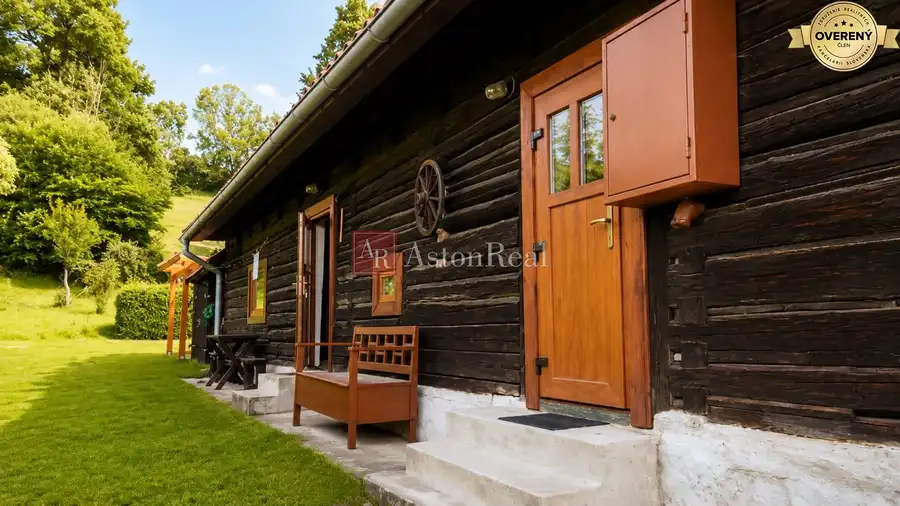
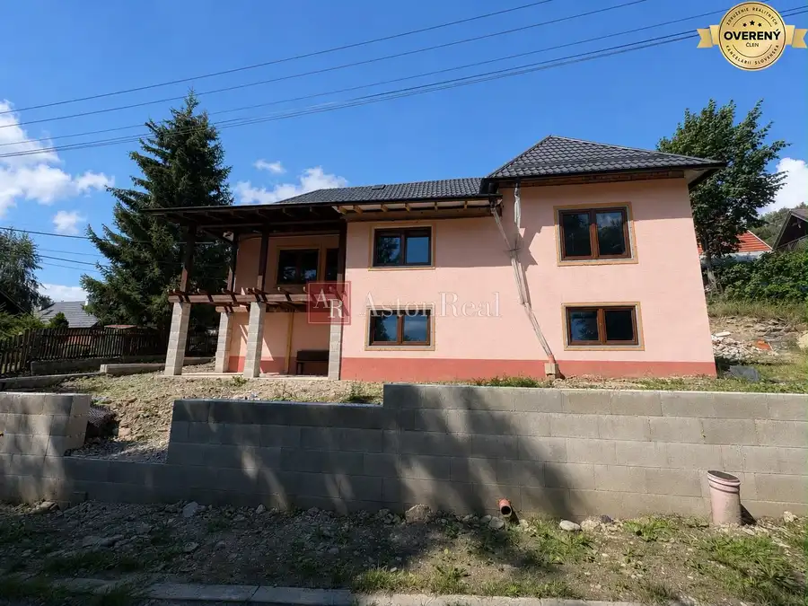
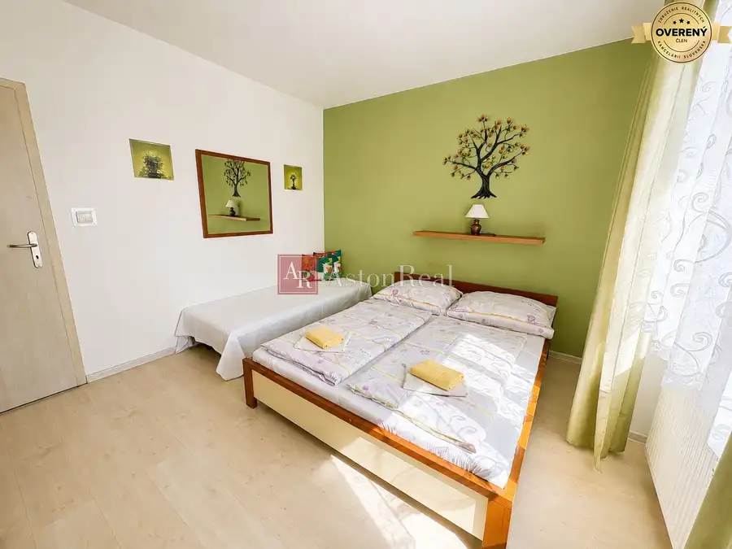
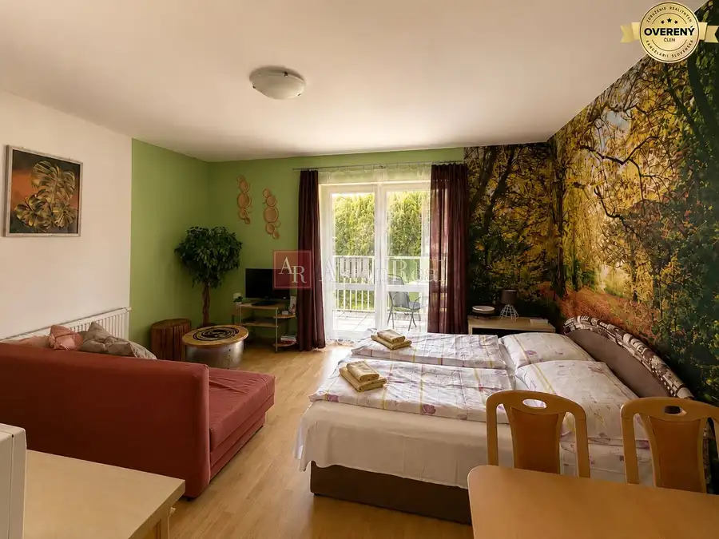
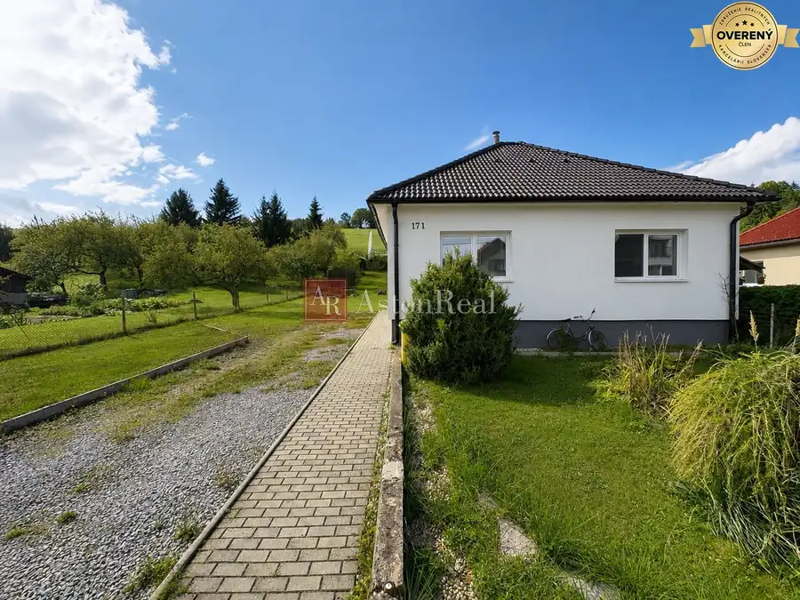
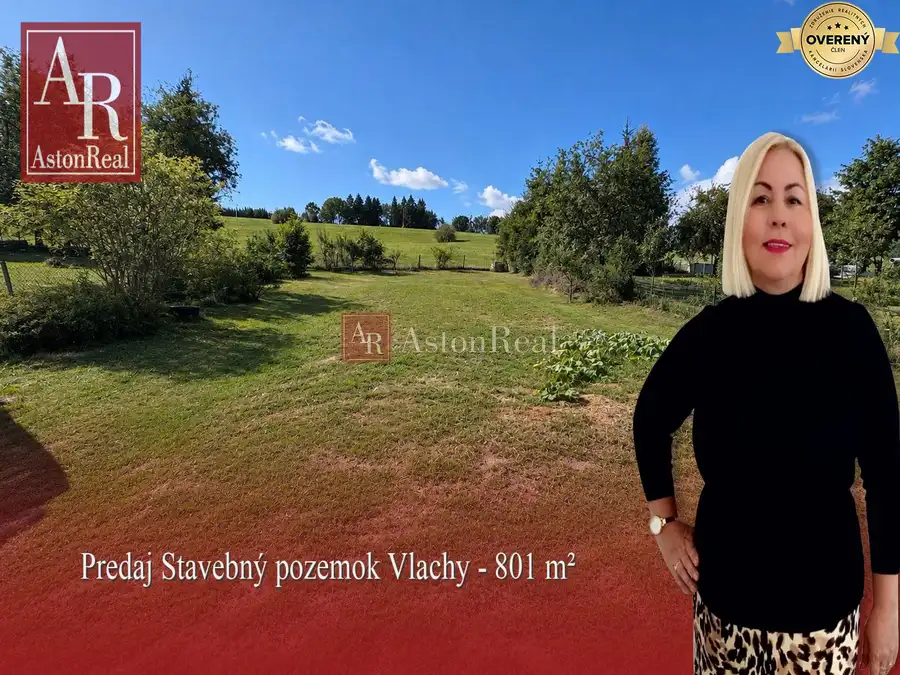
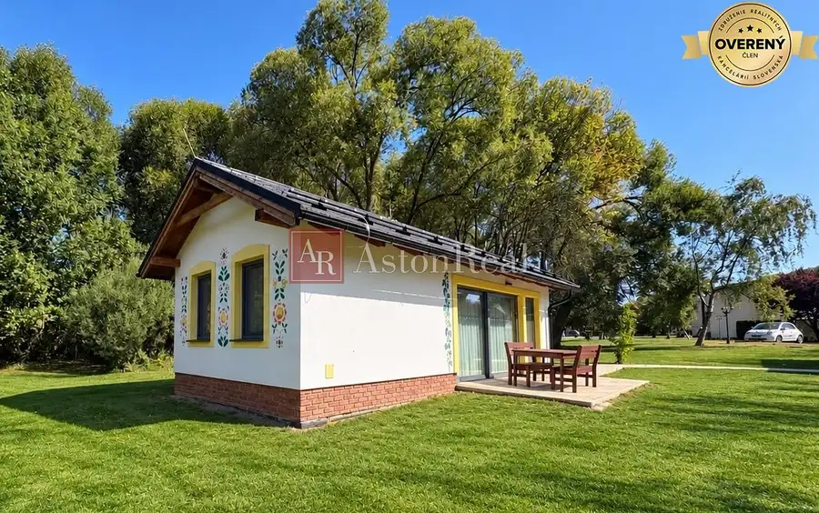
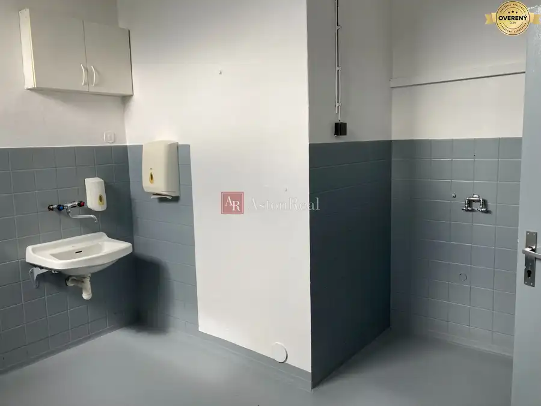
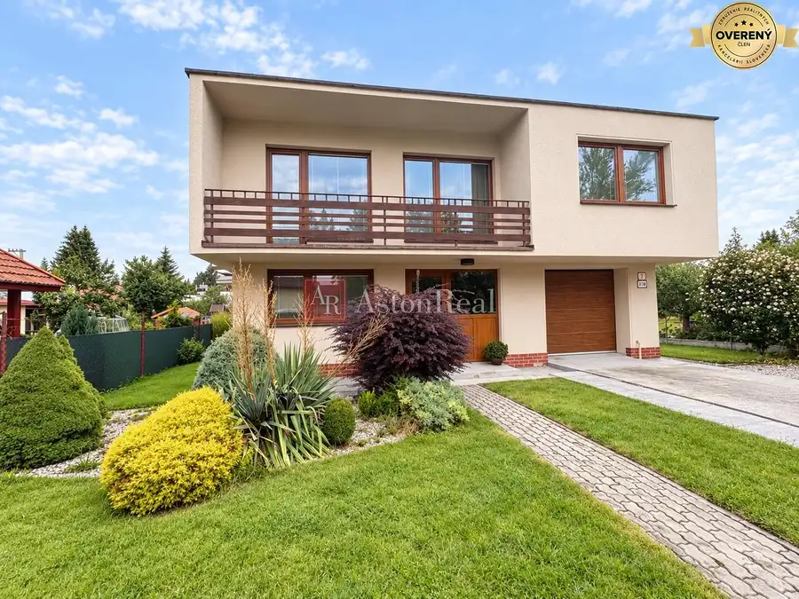

Aktuálna ponuka
10 nehnuteľností, predovšetkým rodinné domy, byty, chaty a chalupy. Každá má vlastnú stránku s fotkami, popisom a mapou.
Prezrieť ponukuSaskia KarmanováRealitná maklérka
Realitná maklérka · AstonReal s.r.o.
Predaj a prenájom nehnuteľností · Liptovský Mikuláš, Vlachy, Beňadiková




Byt9 119 000 €Predaj! 1-izbový byt s balkónom v Liptovskom Mikuláši Liptovský Mikuláš 1-izbový32 m²4. podlažie AstonReal ponúka na predaj útulný a prakticky riešený 1-izbový byt s výmerou 32 m², nachádzajúci sa v obľúbenom apartmánovom dome len 15 minút od…
Rodinné domy9 180 000 €Predaj! Rodinný dom pri Liptovskej Mare – Vlachy, pozemok 567 m² Vlachy 3-izbový95 m² AstonReal ponúka na predaj rodinný dom v obci Vlachy – miestna časť Krmeš, v okrese Liptovský Mikuláš. Nehnuteľnosť sa nachádza v pokojnom prostredí…
Pozemok3 75 000 €Predaj! stavebný pozemok 801 m² Vlachy - Liptovský Mikuláš Vlachy 801 m² AstonReal ponúka na predaj stavebný pozemok s výmerou 801 m², situovaný v pokojnej zastavanej časti obce Vlachy – miestna časť Krmeš, okres Liptovský…
Rodinné domy8 218 000 €Predaj! vaša investícia priamo v srdci Tatralandie Liptovský Mikuláš 2-izbový34.4 m² AstonReal ponúka na predaj elegantný investičný bungalov , situovaný priamo v areáli vyhľadávaného dovolenkového rezortu Tatralandia. Predstavte si…
Nebytové priestory9 3 000 €Prenájom !priestranná Výrobná hala a skladové priestory Liptovský Mikuláš 800 m²5. podlažie AstonReal ponúka na prenájom výrobnú halu a skladové priestory situované v etablovanom priemyselnom areáli na Priemyselnej ulici v Liptovskom…
Rodinné domy9 359 000 €Predaj ! výnimočný rodinný dom v Liptovskej Ondrašovej Liptovska-ondrasova, Liptovská Ondrášová 6-izbový240 m² AstonReal ponúka na predaj mimoriadne zachovalý rodinný dom vo vyhľadávanej lokalite Liptovská Ondrašová, ktorý zaujme nielen svojou veľkorysou…Tomuto výberu zatiaľ nezodpovedá žiadna ponuka. Napíšte mi, čo hľadáte.
Volám sa Saskia Karmanová. Som realitná maklérka kancelárie AstonReal s.r.o. a pôsobím predovšetkým v lokalitách Liptovský Mikuláš, Vlachy, Beňadiková a Jakubovany (Žilinský kraj).
10 nehnuteľností, predovšetkým rodinné domy, byty, chaty a chalupy. Každá má vlastnú stránku s fotkami, popisom a mapou.
Prezrieť ponukuLiptovský Mikuláš, Vlachy, Beňadiková, Jakubovany, Liptovská Ondrášová a okolie. Ponuku si môžete prezrieť podľa lokality.
Nehnuteľnosti v lokaliteOdhad trhovej ceny, príprava prezentácie, obhliadky, zmluvy a odovzdanie nehnuteľnosti.
Dohodnúť stretnutieNa čo sa pýtate najčastejšie, skôr než sa stretneme.
Odhad trhovej ceny vychádza z aktuálnych ponúk a predajov v lokalite, nie z cenníkových tabuliek. Podmienky Vám poviem pri prvom telefonáte.
Najprv obhliadka a odhad ceny, potom príprava prezentácie (fotografie, popis, inzercia), obhliadky so záujemcami, rezervačná zmluva, kúpna zmluva, návrh na vklad do katastra a odovzdanie nehnuteľnosti. O každom kroku viete vopred.
Najrýchlejšie cez WhatsApp alebo telefón. Termín stretnutia alebo obhliadky dohodneme podľa Vás.